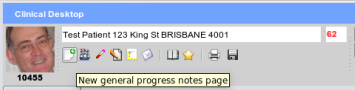
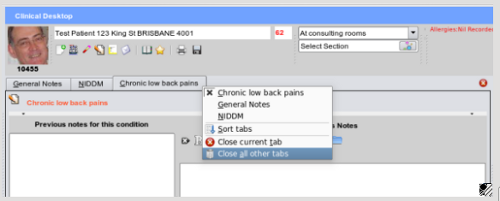

Accessing the General Notes Page
When you first load a patient's record, the only tab open in the main workspace is the General Notes tab. Only notes
which are not associated with any particular health issue of importance should be entered here - for example, URTI,
minor trauma, etc.

If you close the general tab and need to re-load it there is a special button on the main toolbar.
Acessing notes for Health Issues
The health issue must have already been entered into EasyGP via the past history or
health issues section, in which
case it will be on the main problem lists at the bottom left hand side of the screen. When double clicked, a problem
will be allocated its own progress notes page selected by the tabs at the top of the workspace such as here, where
we can see tabs for General Notes, NIDDM and Chronic low back pains:

Clicking any tab will display all notes previously entered for the condition, as well as allow you to enter new
notes in the notes editor.
Clicking the close button
will close the current tab.
Should you wish to close a specific tab, or all other tabs, right mouse clicking on any tab will bring up the main
workspace tabs menu as shown above.